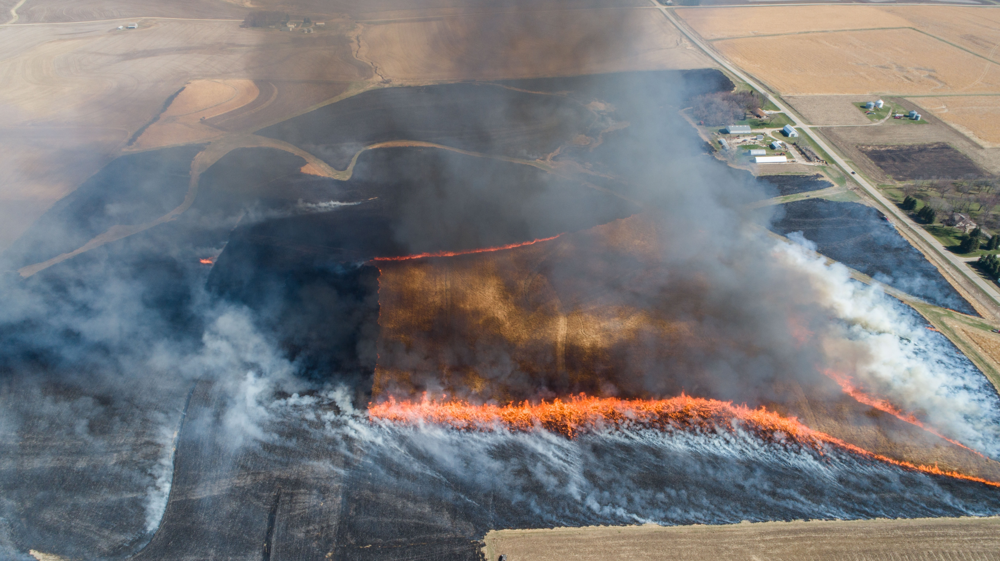
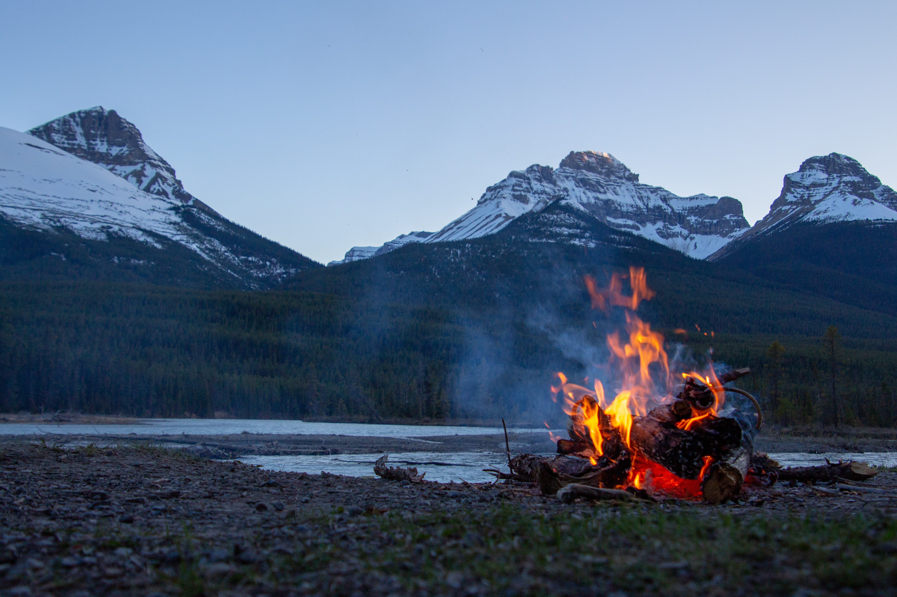
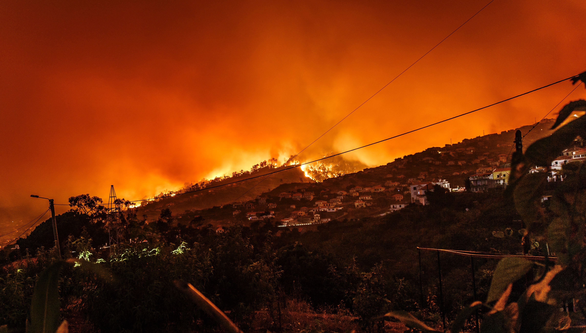
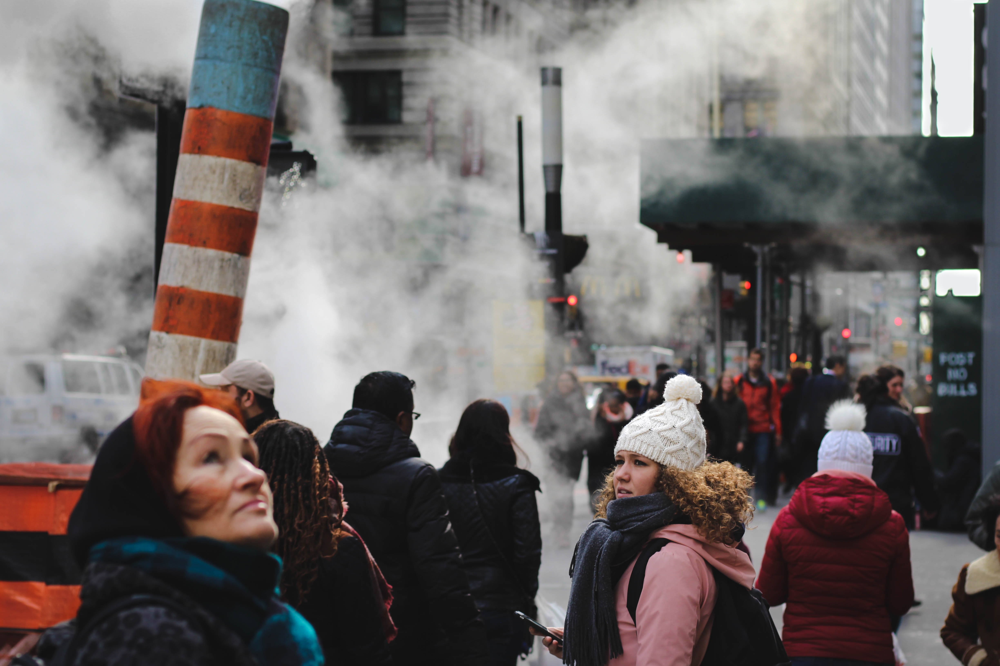
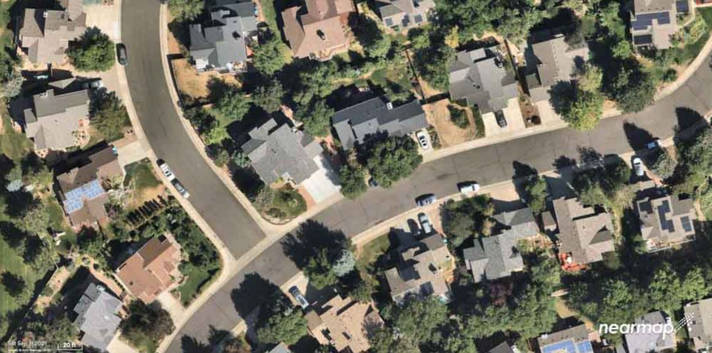

Fires & Air Quality
The Haze of Smoke
Further Resources
If you're interested in learning more about wildfires and smoke, we invite you to check out the following resources:
Air Now: A fire and smoke map provided by Air Now showing smoke, air quality, and fire locations.
World Health Organization: a basic overview of wildfires, smoke, and their basic health impacts
U.S. Forest Service: brief introduction with sections for many different types of fire science and lots of research links
European Commission: explores worldwide smoke impacts and discussions health and some chemistry/composition
Stanford: an interview with Stanford scientists with many wildfire-focused questions
Wash DoH: article about staying safe in ongoing Washington smoke
U.S. DotI: series of tips for directly preventing wildfires
NPR: discusses controlled burns and their usage in the South vs. the West
C2ES: significant discussion of preventing wildfires on a large scale, and the increase in wildfires by region
Wildfires & Smoke
Wildfires are unplanned fires that burn in natural areas. They are primarily caused by human activities and natural phenomenon, and can happen anytime, anywhere.
Wildfires are a part of nature, bringing renewal and change. They speed up forest decomposition, create open patches of space for new plants to grow, improve habitat and food for animals, and helps deliver nutrients to surviving plants. However, wildfires have become increasingly worse over time with increased size and frequency -- specifically, the number of large fires has doubled between 1984 and 2015 in the western United States.
The danger is not limited to the fire itself; the smoke can travel across continents and oceans, and is estimated to cause over 339,000 premature deaths per year.
Wildfires and smoke have been getting worse in recent years, and smoke has been particularly hazardous in the Seattle area in 2022 due to wildfires including the Vantage Highway Fire, Parks Fire, and Bolt Creek Fire. Seattle and Portland are consisting ranked as having the poorest air quality out of all major cities in the United States. Meanwhile, 2020 and 2021 were Washington's second- and third-worst fire seasons respectively. Wildfires and smoke are only getting, and it's important to stay educated.
Prevention & Management
While we cannot -- and should not -- stop all wildfires in their tracks, there are many measures we can take to reduce the likelihood of wildfires and severe wildfires.
Wide-Scale
Wildfires and their damage can be lessened by changing how we manage forests, where and how we build our homes, and by supporting firefighters and fire-prevention.
Firstly, we can increased controlled burns. This prevents a buildup of undergrowth that makes fires more intense. Ample fuels, such as dead trees, can be removed from at-risk forests.
Secondly, we can discourage large housing developments near fire-prone forests and increase the space between structures and brush. Additionally, we can use fire-resistant features and materials in houses designed to lessen the impacts of fires.
Thirdly, we can increase funding to firefighters and fire-prevention intiatives. Among many objectives, these help promote the measures above, as well as the development of recovery plans before fires hit.
Small-Scale
There are many things individual people can do to reduce the risk of starting their own forest fire.
Many of these are guidelines for campers, such as building campfires far from flammable items, and dousing fires until they are cold when done. Additionally, one should always avoid fires or sparks when it's hot, dry, or windy.
Vehicles also play an important role in fires. By keeping your vehicles well-maintained and away from dry grass, you can significantly reduce the risk of machinery-induced fires.
After the Fact
Wildfires are inevitable. However, there are still steps you can take to minimize your exposure to the smoke they create.
The most important way is to stay inside. Keep windows and doors closed, and try to filter your indoor air. Set your air conditioning to recirculate air rather than draw in fresh (and smoky) air from the outdoors. Avoid smoking or burning candles indoors, and wear a mask whenever you go outside to lessen inhalation.
Effects of Wildfires
Wildfires have a range of effects on infrastructure. They can disrupt transportation, communications, power, gas, and water, among other services. Wildfires may almost melt plastic pipes, causing contamination.
More personally, they can directly cause wide-scale displacement and financial ruin for countless families and businesses.
Overall, they contribute to a loss of property, crops, resources, animals, and people, with potentially severe effects on mental health and psychosocial well-being.
They can also cause significant injuries to physical health:
- Burns and injuries
- Eye, nose, and throat irritation
- Lung irritation and decreased lung function
- Coughing and wheezing
- Pulmonary inflammation
- Bronchitis
- Exacerbations of asthma
- Etc.
- Worsening of cardiovascular diseases such as heart failure
Wildfires also release lots of mercury, which can lead to speech impairment, hearing impairment, walking impairment, muscle weakness, and vision problems.
Effects of Smoke
The smoke itself causes many symptoms alone, and, with how easily it carries across vast distances, can affect far more people than the wildfire itself without any of the affected consciously realizing the dangers.
Minor symptoms of smoke inhalation include:
- Eye, nose, and throat irritation
- Lung irritation
- Wheezing
- Coughing
- Headaches
- Shortness of breath
More serious or severe symptoms of smoke inhalation are as follows:
- Difficulty breathing
- Chest pain
- Irregular breathing
Effects on Global Warming
Wildfires release large amounts of carbon dioxide, carbon monoxide, and fine particulate matter into the atmosphere. These all empower global warming.
Additionally, smoke from burning vegetation has been proven to become more toxic over time, both to humans and the globe. As it travels, it reacts with trace radicals (molecules with unpaired electrons) to undergo oxidation. This turns the smoke into highly reaction compounds called free radicals. This can make smoke as much as four times worse in only a 24-hour span. These smoke particles also contain carcinogens, which increase the risk of cancer.

The brown carbon from wildfires absorbs heat from the sun and increases warming levels. Normally, the recolonizing plants after a wildfire would remove carbon from the atmosphere and make fires net neutral. However, the increasing frequency and size of wildfires has overturned this balance: plants don't have time to fully mature before they're burned down again.
All in all, wildfires and smoke have an undoubtedly negative effect on global warming. This increases dry, warm environments, which in turn fuel more forest fires -- a downwards spiral that must be contained.

Photo Gallery
Click the buttons to view before-and-after photos.
This is a photo of Superior, Colorado taken September, 2021, before the Marshall Fire struck in December.
Interested in learning more? Hit the button below to submit your email to have more information sent to your inbox.